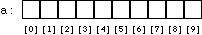

So far, we've been declaring simple variables: the declaration
int i;declares a single variable, named i, of type int. It is also possible to declare an array of several elements. The declaration
int a[10];declares an array, named a, consisting of ten elements, each of type int. Simply speaking, an array is a variable that can hold more than one value. You specify which of the several values you're referring to at any given time by using a numeric subscript. (Arrays in programming are similar to vectors or matrices in mathematics.) We can represent the array a above with a picture like this: 
In C, arrays are zero-based: the ten elements of a 10-element array are numbered from 0 to 9. The subscript which specifies a single element of an array is simply an integer expression in square brackets. The first element of the array is a[0], the second element is a[1], etc. You can use these ``array subscript expressions'' anywhere you can use the name of a simple variable, for example:
a[0] = 10; a[1] = 20; a[2] = a[0] + a[1];Notice that the subscripted array references (i.e. expressions such as a[0] and a[1]) can appear on either side of the assignment operator.
The subscript does not have to be a constant like 0 or 1; it can be any integral expression. For example, it's common to loop over all elements of an array:
int i; for(i = 0; i < 10; i = i + 1) a[i] = 0;This loop sets all ten elements of the array a to 0.
Arrays are a real convenience for many problems, but there is not a lot that C will do with them for you automatically. In particular, you can neither set all elements of an array at once nor assign one array to another; both of the assignments
a = 0; /* WRONG */and
int b[10]; b = a; /* WRONG */are illegal.
To set all of the elements of an array to some value, you must do so one by one, as in the loop example above. To copy the contents of one array to another, you must again do so one by one:
int b[10]; for(i = 0; i < 10; i = i + 1) b[i] = a[i];Remember that for an array declared
int a[10];there is no element a[10]; the topmost element is a[9]. This is one reason that zero-based loops are also common in C. Note that the for loop
for(i = 0; i < 10; i = i + 1) ...does just what you want in this case: it starts at 0, the number 10 suggests (correctly) that it goes through 10 iterations, but the less-than comparison means that the last trip through the loop has i set to 9. (The comparison i <= 9 would also work, but it would be less clear and therefore poorer style.)
In the little examples so far, we've always looped over all 10 elements of the sample array a. It's common, however, to use an array that's bigger than necessarily needed, and to use a second variable to keep track of how many elements of the array are currently in use. For example, we might have an integer variable
int na; /* number of elements of a[] in use */Then, when we wanted to do something with a (such as print it out), the loop would run from 0 to na, not 10 (or whatever a's size was):
for(i = 0; i < na; i = i + 1)
printf("%d\n", a[i]);
Naturally, we would have to ensure that na's value
was always less than or equal to
the number of elements actually declared in a.
Arrays are not limited to type int; you can have arrays of char or double or any other type.
Here is a slightly larger example of the use of arrays. Suppose we want to investigate the behavior of rolling a pair of dice. The total roll can be anywhere from 2 to 12, and we want to count how often each roll comes up. We will use an array to keep track of the counts: a[2] will count how many times we've rolled 2, etc.
We'll simulate the roll of a die by calling C's random number generation function, rand(). Each time you call rand(), it returns a different, pseudo-random integer. The values that rand() returns typically span a large range, so we'll use C's modulus (or ``remainder'') operator % to produce random numbers in the range we want. The expression rand() % 6 produces random numbers in the range 0 to 5, and rand() % 6 + 1 produces random numbers in the range 1 to 6.
Here is the program:
#include <stdio.h>
#include <stdlib.h>
main()
{
int i;
int d1, d2;
int a[13]; /* uses [2..12] */
for(i = 2; i <= 12; i = i + 1)
a[i] = 0;
for(i = 0; i < 100; i = i + 1)
{
d1 = rand() % 6 + 1;
d2 = rand() % 6 + 1;
a[d1 + d2] = a[d1 + d2] + 1;
}
for(i = 2; i <= 12; i = i + 1)
printf("%d: %d\n", i, a[i]);
return 0;
}
We include the header <stdlib.h>
because it contains the necessary declarations
for the rand() function.
We declare the array of size 13
so that its highest element will be a[12].
(We're wasting a[0] and a[1];
this is no great loss.)
The variables d1 and d2 contain the rolls
of the two individual dice;
we add them together to decide which cell of the array to increment,
in the line
a[d1 + d2] = a[d1 + d2] + 1;After 100 rolls, we print the array out. Typically (as craps players well know), we'll see mostly 7's, and relatively few 2's and 12's.
(By the way, it turns out that using the % operator to reduce the range of the rand function is not always a good idea. We'll say more about this problem in an exercise.)
4.1.2 Arrays of Arrays (``Multidimensional'' Arrays)
Read sequentially: prev next up top
This page by Steve Summit // Copyright 1995-1997 // mail feedback